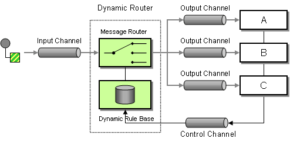

Apache Camel 3.15.0 introduces a new Dynamic Router EIP component. Although Camel core includes a Dynamic Router processor, I wanted a Dynamic Router implementation that was much closer, and more adherent, to the EIP specification.
The Dynamic Router as a “glue” component, not a messaging server
It is important to note that, while this implementation of the Dynamic Router is a component, it is not meant to be a component for some type of messaging system (like JMS, etc.), or to act as a server for a new type of messaging system. It could have been implemented as a part of Camel Core, but since it does not need to introduce elements into the Camel DSL, it is better as a component. Even as a component, it is still intended to provide useful “glue” between sources and destinations of potentially different types.
Seeing the similarities and differences between the Dynamic Router component, and other Camel features, is helpful to understand its use:
- Content Based Router (Choice): but the choices are fully subscriber-initiated and do not need to be known at compile time.
- Dynamic Router (processor): This will be discussed in detail below.
- Message Filter: but instead of creating the filter at compile time, consumers provide their own filter at runtime.
- Selective Consumer: but turned the other way around: instead of sending messages to (potentially a list of) recipients, and letting them all determine which messages to process or discard, this component allows a consumer to subscribe with its filter so that the router can handle this (centrally) and only send messages to the (first) appropriate subscriber.
- To Dynamic: but the sender does not need to know about dynamic recipients, and “to” endpoint variables do not have to be set.
It is true that a developer could achieve almost anything in software by composing a solution of several separate pieces, and implementing the glue that helps them to work together. Also, in this case, it would be necessary to implement the runtime registration and management of routing participants. In order to simplify messaging to and from other sources, this component ties aspects of these things together in a way that allows the evaluation to be truly runtime-based. This component provides this type of integration in a way that is independent of other components or transports, and can, therefore, be used as a dynamic integration point between completely different messaging systems.
So, let’s have a look at both implementations to see what this new component provides that might suggest some new use cases and solutions for Apache Camel users.
A Look at the Dynamic Router EIP

Above, you see a diagram of the Dynamic Router EIP. What I like best about this pattern is that the routing participants (A, B, and C) can utilize a control channel to provide their routing rules to the rule base inside the Dynamic Router itself. When a message comes in through the input channel, the message router consults the dynamic rule base, and sends the message to the recipient with matching rules in the rule base.
Skip Reading? Jump Right In!
In the camel-spring-boot-examples module, I have created a dynamic-router-eip module that provides a suggestion of one way that you might use this new Dynamic Router EIP component. I will elaborate more on the example in a subsequent section. Feel free to jump to that example in the repository, or continue to read the following sections for more information and a deeper dive into the example afterward.
The Current (Camel Core) Implementation
The Dynamic Router in Camel core uses an approach that builds on the Routing Slip EIP, and makes it dynamic. Unlike the standard routing slip that is evaluated only once (at the beginning), the dynamic router slip is evaluated on-the-fly. The dynamic rule base is implemented, here, as the dynamic routing slip. It contains the conditions under which a message is routed to recipients, and the endpoint URI to which the message is routed. After processing, if the return value is null, the routing stops. If the return value is non-null, then the message is re-evaluated against the slip, and the routing continues. Any time a message passes through the dynamic router, its path might be different, depending on various conditions, and what a routing participant returns after processing an exchange that matches its rules.
The New (Component) Implementation
While this implementation has many good use cases, I saw a different implementation, because I did not want to have to know the routing rules before runtime. I wanted routing participants to be able to potentially come and go during the course of runtime, and subscribe with their rules, and unsubscribe from routing, as needed, thus making it truly dynamic.
Control Channel Messages
A routing participant can, at any time, send a Control Message through the Control Channel, specifying a simple or complex Predicate to evaluate an Exchange for suitability, and a destination Endpoint to send matching Exchanges. When a participant wants to unsubscribe, they can send another Control Message that removes the participant from the routing.
Subscribe Example
// Create a subscription that accepts an exchange
// when the message body contains an even number
DynamicRouterControlMessage evenSubscribeMsg =
new DynamicRouterControlMessage(
ControlMessageType.SUBSCRIBE,
"evenNumberSubscription", "test", 2, "jms:even",
body().regex("^\\d*[02468]$"));
template.sendBody("dynamic-router:control", evenSubscribeMsg);
The message contains the message type, the subscription ID, the Dynamic Router channel, message priority (where lower = higher priority), the destination URI for matching exchanges, and the Predicate to evaluate the exchange.
Unsubscribe Example
DynamicRouterControlMessage unsubscribeMessage =
new DynamicRouterControlMessage("testSubscriptionId", "test");
template.sendBody("dynamic-router:control", unsubscribeMessage);
The control message to unsubscribe requires fewer parameters. It requires only the subscription ID and the channel, since the remaining parameters are irrelevant in the context of unsubscribing.
Dynamic Routing Channels
This component utilizes routing “channels” that are analogous to VLANs in the networking world, or like queue/topic names in JMS. We have already discussed the specialized control channel, but any number of channels can be created and used at runtime. These channels logically separate exchanges, participants, and their rules, from those on other channels.
Building a Route to Route Exchanges Through a Dynamic Router Channel
Simply use a RouteBuilder to utilize a Dynamic Router and route Exchanges through a channel:
from("direct:start").to("dynamic-router://test");
Now, messages that are sent to direct:start will go to the test channel of the Dynamic Router, and the exchanges will be evaluated against all subscription rules/predicates until the first match is found, and the exchange will be sent to the subscription’s supplied destination endpoint URI.
A Somewhat-Practical Example
As I mentioned above, there is a dynamic-router-eip module in the camel-spring-boot-examples repository. After the Spring Boot application starts, the routing participants send a message to the dynamic router control channel URI. There are eleven routing participants, where each participant subscribes with a predicate that examines the message body to determine if it is suitable for processing, and a destination URI where matching exchanges will be sent. Ten of these participants determine if the message body is a multiple of their particular number (one through ten), and the eleventh participant determines if the message body is a prime number. After they all subscribe, a service generates numbers from one to one million, and sends them to a route that feeds the dynamic router. As the message bodies are consumed by each participant, they add their results to a service that accumulates the numbers as multiples of 1 through 10. Finally, the results are printed, along with the processing time. On my machine, the entire ordeal takes around seven seconds, although your results may vary. The output looks like this:
. ____ _ __ _ _
/\\ / ___'_ __ _ _(_)_ __ __ _ \ \ \ \
( ( )\___ | '_ | '_| | '_ \/ _` | \ \ \ \
\\/ ___)| |_)| | | | | || (_| | ) ) ) )
' |____| .__|_| |_|_| |_\__, | / / / /
=========|_|==============|___/=/_/_/_/
:: Spring Boot :: (v2.6.2)
INFO 23130 --- [main] NumbersService : Subscribing participants
INFO 23130 --- [main] NumbersService : Sending messages to the dynamic router
INFO 23130 --- [main] NumbersService : Finished
Dynamic Router Spring Boot Numbers Example Results:
odd: 150077
even: 114287
sevens: 101588
tens: 100000
nines: 100000
eights: 88889
primes: 78494
threes: 76191
fives: 76190
sixes: 57142
fours: 57142
Received count: 1000000 in 5709ms
How Does This All Sound To You?
If this component implementation of the Dynamic Router EIP might suit your needs and use cases, please give it a try and let us know what you think. Thank you for taking the time to read about this new Dynamic Router EIP component!
Postscript: Dedication
I dedicate this work to my late brother, Jeffrey T. Storck, who passed away on 8 June 2020. He was an excellent and very successful software engineer, he loved Apache Camel, and he was on the PMC of another prominent Apache project. We shared a passion for clean, testable, maintainable, and elegant software, and for always learning how to do it better. He taught me a lot, and he was probably the largest single influence in helping to make me the software engineer that I am today. Man, I miss that guy!